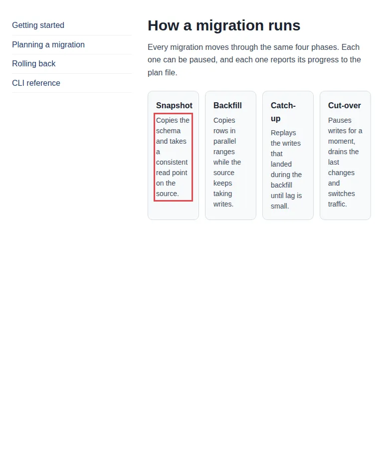

check responsive
A card grid that needs 826px, switched on at 768px
Every viewport width is a generated test case; the page's own media queries partition them. One of the eleven mutants in the responsive pattern catalog forces four columns from 768px.
Open the page under test · fixtures/responsive-patterns/mutants/card-grid--fixed-four.html
Run it
vlmkit check responsive fixtures/responsive-patterns/mutants/card-grid--fixed-four.html
What to look at
The failure is shrunk before it is shown: to the exact interval 768-825px, to the declaration that causes it, and to a breakpoint move that was rewritten in the stylesheet and re-checked before the report calls it verified.
The fix
Move the breakpoint to (min-width: 826px), or let the grid drop a column.
What vlmkit printed
vlmkit check responsive fixtures/responsive-patterns/mutants/card-grid--fixed-four.html · exit 0
vlmkit check responsive
source: fixtures/responsive-patterns/mutants/card-grid--fixed-four.html
status: warn
exits 0 — 1 warn(s) did not fail this command. To gate on one: --rule text-starved=suspect
seed 1 · 60 cases · widths 320-1440 · heights 480-1000
media: 1 condition(s) → 2 width regime(s) (transitions at 768px)
320-767px 30 case(s) clean
768-1440px 30 case(s) 8/30 case(s) failing (min-width: 768px)
properties: page-overflow-x, clipped-content, text-collision, text-clipped, container-protrusion, occluded-text, collapsed-container, text-starved
! text-starved ol.phases > li:nth-of-type(1) > p:nth-of-type(1) +3: ol.phases > li:nth-of-type(2) > p:nth-of-type(1), ol.phases > li:nth-of-type(3) > p:nth-of-type(1), ol.phases > li:nth-of-type(4) > p:nth-of-type(1)
fails at 768-825px (8 generated case(s); shrunk from 768x900 in 12 checks)
starts exactly at the 768px breakpoint ((min-width: 768px) switches on) and clears at 826px with no breakpoint there — the layout switched on at 768px needs 826px
→ move the breakpoint: (min-width: 768px) → (min-width: 826px): verified — rewritten in the stylesheet, the failure clears at 768, 797, 825px and nothing else fails there
"Copies the schema and takes a consisten…" (ol.phases > li:nth-of-type(1) > p:nth-of-type(1)) wraps into 8 lines of ~8.3 characters in a box 69px (4.9em) wide — squeezed below what its text needs; give the item room (let the row wrap, drop a column, or move the breakpoint).
cause: `grid-template-columns: repeat(4, minmax(0, 1fr))` (ancestor ol.phases) — .phases in <style> in card-grid--fixed-four.html, @media (min-width: 768px); overriding it to `none` clears it at 768, 797, 825px; also clears it alone: `grid-template-columns: 240px minmax(0, 1fr)` (ancestor div.shell) — .shell in <style> in card-grid--fixed-four.html, @media (min-width: 768px); `padding: 16px` (ancestor ol.phases > li:nth-of-type(1)) — .phase in <style> in card-grid--fixed-four.html
reproduce: vlmkit check responsive fixtures/responsive-patterns/mutants/card-grid--fixed-four.html --width 768 --height 900
timing: partition 333ms · cases 3236ms · shrink 1981ms